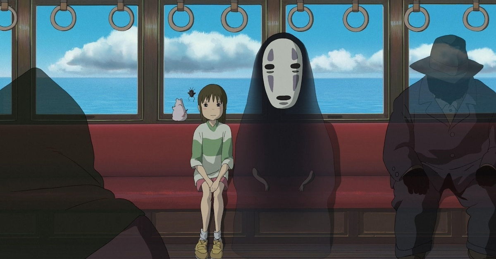

剧情简介
千寻和父母搬家途中误入一座古怪的小镇。父母因为贪吃变成了猪，天黑后，街上出现的也不再是人类。为了留下来寻找救回父母的办法，千寻在白龙的帮助下进入汤屋工作，并被汤婆婆改名为“小千”。她要学着烧水、清理浴池、应付难缠的客人，还要记住自己的名字。故事没有让她突然变得无所不能，她只是一次次把眼前的事情做好。
推荐理由
汤屋里有许多值得留意的小细节：锅炉房的煤灰精灵、客人留下的污泥、员工看到金子时的反应。这个世界很热闹，却也让人觉得陌生。千寻在其中交到朋友，也学会拒绝诱惑。影片后半段的水上列车尤其安静，与前面的忙乱形成对比。比起急着解释每个角色象征什么，不妨先跟着千寻走完这段路。

电影看点
- 千寻前后说话和做事的方式不同，这些变化表现了她的成长。
- 无脸男在桥上、汤屋和钱婆婆家中的状态并不一样。
- 水上列车一段对白很少，画面与音乐承担了主要叙事作用。
观影主题语 · 本站撰写长大以后，也别忘了自己原来的名字。